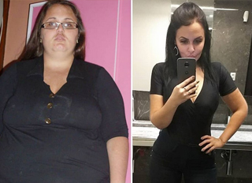

El abuso de nuevo quemador de grasa causa anorexia
Al tratar de obtener el `cuerpo de una supermodelo`, muchas chicas pierden mucho más peso del permitido. Hoy en día, perder peso es bastante fácil, especialmente debido a la cantidad y variedad de productos dietéticos disponibles en el mercado. Uno de ellos es un potente quemador de grasa natural a base de extractos de frutas exóticas, así como otros componentes vegetales y vitaminas. Estas gotas han aparecido recientemente en el mercado de España y ya han alarmado a toda la comunidad médica.
La aparición de en el mercado español ha llevado a un aumento en los casos de pérdida extrema de peso. Para obtener el cuerpo perfecto y deshacerse de los kilos de más, los consumidores usan dosis mucho más altas que las recomendadas. Es por eso que las personas que anteriormente usaban productos menos efectivos en dosis más altas que las permitidas, recibieron daños por esto, y ahora nuevamente cometieron el mismo error con
Una alta concentración de componentes naturales con potentes propiedades para quemar grasa, así como otros ingredientes activos en estas gotas, destruyen intensa y rápidamente las células de grasa corporal. Es por eso que los consumidores deben seguir cuidadosamente las instrucciones y no exceder la dosis diaria recomendada. Sin embargo, tan pronto como ven los resultados de la primera semana, están encantados y comienzan a descuidar las instrucciones para acelerar aún más la pérdida de peso.

Todos los que perdieron peso con informaron sobre una pérdida de peso excesiva, de 5 kg por semana a 16 kg por mes. Dados estos fantásticos resultados, los consumidores inicialmente están muy entusiasmados, pero luego pierden el control de sus hábitos alimenticios y se ven obligados a comer alimentos ricos en calorías para compensar la pérdida de peso. Sin embargo, incluso después de volver a la nutrición normal, siguen perdiendo peso.

Un estudio realizado por un laboratorio alemán mostró que:
causa una pérdida extrema de peso y acelera el metabolismo hasta 5 veces. Las mujeres de todo el mundo están tomando una dosis excesiva de precisamente por la efectividad excepcional de estas gotas.
¿Por qué estás perdiendo peso con ?
1. Las gotas contienen solo ingredientes naturales. Todos los componentes funcionan muy bien juntos y reducen el peso de forma intensiva día a día.
El extracto de tuna reduce el colesterol y el azúcar en la sangre. Su consumo regular proporciona un efecto lipofílico, por lo que las grasas obtenidas de los alimentos no se absorben y se excretan rápidamente del cuerpo.
El extracto de papaya reduce el apetito y ahoga el hambre. Regulando los procesos de producción de grasa en el cuerpo y bloqueando la ganancia de exceso de peso.
El extracto de pitahaya tiene un poderoso efecto antioxidante: elimina eficazmente las toxinas del cuerpo y prolonga la juventud y la belleza. También ayuda a normalizar los niveles hormonales, mejorar el estado de ánimo y así acelerar la pérdida de peso saludable.
-
2. Las vitaminas B1, C y el extracto de cordyceps fortalecen el sistema inmunológico y ayudan a que la piel permanezca flexible y suave sin estrías ni celulitis. Para una pérdida de peso saludable (de 5 a 10 kg por mes), debe tomar 25 gotas dos veces al día
Para una pérdida de peso saludable (5 a 10 kg por mes), los consumidores deben tomar 25 gotas de dos veces al día.
Una encuesta entre personas que lograron perder peso confirmó inequívocamente que todos tomaron dosis mucho más grandes de lo recomendado: consumieron 3-5 veces más de lo requerido. ¡Esto explica por qué pierden peso demasiado rápido, perdiendo 10-12 kg en unas pocas semanas! Con resultados tan impresionantes, les fue muy difícil parar y, por lo tanto, continuaron perdiendo peso en exceso.
El Centro Nacional de Nutrición advierte que una pérdida de peso tan rápida y repentina puede provocar problemas de salud graves.
En comparación con otros productos para adelgazar, actualmente es el quemador de grasa más potente del mercado con una tasa de éxito del 97,8%. Sin embargo, existe el riesgo de un aumento excesivo de la dosis. Recuerde: debe perder peso lentamente para no dañar su salud. Si decide probar para perder algunas libras, beba solo 25 gotas dos veces al día, independientemente de su peso.
¡Cuídanse!
Comentarios

Escuché sobre este producto, pero cuando estaba buscando estas gotas en Internet, siempre me he encontrado con sitios extraños. Finalmente, encontré un sitio confiable. El operador ya me llamó y dijo cuándo exactamente me entregarán . ¡Estoy feliz! ¡Tengo suficientes dietas inútiles! GRACIAS

Hola todos. ¡Lo que dicen es verdad! ¡, que pedí desde el sitio oficial gracias al consejo de un amigo, da resultados increíbles! He estado tomando estas gotas durante dos meses: durante la primera semana perdí 3 kg, en la segunda - 4 kg, durante la tercera y cuarta - ¡otros 8.5 kg y así sucesivamente! Puedes ver mis fotos a continuación.


Estas gotas funcionan! Yo mismo soy la verdadera prueba de esto. ¡Bebí durante dos semanas y ya he perdido peso! Elimine la grasa de los michelines, ¡fantástico! No quiero publicar fotos, primero quiero lograr mi objetivo. Tomo las gotas de acuerdo con las instrucciones dos veces al día, y todo está bien.

Hace tres meses, mi nutricionista me recomendó estas gotas, así que comencé a tomarlas. ¡Perdí 20 kg! Este es un gran producto, porque rápidamente quité todos los kilogramos que gané durante el embarazo. Realmente vale la pena, recomiendo a todos. ¡Los resultados no se hacen esperar!


¡No puedo creer esto! Ya los ordené. Te contaré sobre mi éxito cuando empiece a tomarlo. Ahora mi peso es de 85 kg con una altura de 160. Personalmente, creo que los quemadores de grasa funcionan, incluso si tenemos que tener en cuenta factores individuales como el metabolismo y el cumplimiento del régimen. Quiero perder peso y encontrar un chico, estoy tan cansada de estar solo :(

Probé muchas dietas, pero no perdí peso en absoluto y ya perdí la esperanza de que esto suceda. Escuché sobre las gotas , pero no creía que funcionaran ... Mi nutricionista confirmó su efectividad al decir que funcionan muy bien si sigues las instrucciones. Muchas gracias por el consejo, ¡espero que todo salga como lo planeo!
Ya he perdido 11 kg con estas gotas. Claramente seguí todas las instrucciones y las compré en el sitio web oficial. Incluso mi celulitis ha desaparecido. Estas gotas son ideales para quienes desean perder peso. Actúan rápidamente y después de perder peso, los kilogramos no vuelven. ¡Pídalos y verá qué tan rápido pierde peso! No te rindas, puedes perder peso.


Según mi experiencia personal, puedo decir que este quemador de grasa es muy efectivo. Perdí peso gracias a las gotas de , pero no olvides que lo más importante es ser disciplinado y seguir claramente tu objetivo. ¡Te deseo éxito!

Con realmente pierdes peso, perdí 30 kg en 3 meses, fue muy fácil. No me limité específicamente a la comida, bebí estas gotas. En mi opinión, este es el mejor quemador de grasa. Ahora mis amigos apenas me reconocen, y cambié completamente mi guardarropa. :) Estas gotas me las aconsejó mi amigo cuando trabajaba en Munich. Y ahora yo mismo los recomiendo a todos. ¡Mira mis fotos!

¡3 meses para tal pérdida de peso es muy poco, usted pierde peso muy rápidamente! ¿Tu piel está flácida? ¿Hay algún efecto secundario?

¡No absolutamente no! Todo está bien para mí, porque estas gotas son un producto natural sin efectos negativos extraños, ¡incluso la celulitis desaparece!

Estoy muy feliz por ustedes chicas! Mañana comenzaré a beber estas gotas y sé que todo cambiará. Pedí unos paquetes de gotas para lograr mi peso ideal.


He estado tomando durante dos semanas y ya he perdido 10 kg de grasa. ¡Los resultados son visibles al instante!

¡Hola! También estoy muy satisfecha con los resultados de estas gotas, todos los comentarios indican cuán efectivo es para perder peso. Noté una gran pérdida de peso en solo una semana, los beberé, hasta que obtenga los resultados deseados. Buena suerte a todos, también perderás peso.


- Periodista nutricionista.
- Dr. Luis Diaz - autor de varios libros que han ayudado a miles de personas.
Los resultados del estudio durante un mes con la participación de 17 personas con sobrepeso de más de 10 kg:

- Todos los participantes perdieron de 6 a 13 kg.
- 97% notó una mejora en su condición física
- mejorando el funcionamiento del hígado y el páncreas y, por lo tanto, acelerando el metabolismo.
Los experimentos han demostrado que no solo reduce el peso de manera intensiva, sino que también mejora significativamente el estado general del cuerpo y el bienestar. Las gotas contienen una gran cantidad de sustancias biológicamente activas, vitaminas y antioxidantes en forma pura y natural. Tomando el producto ayuda a los pacientes con sobrepeso a perder peso de manera efectiva y evita problemas con el hígado y el páncreas.

Así es como las estrellas pierden peso: ¿quién hubiera pensado ...


Consigue tu cuerpo perfecto en solo 14 días. Instrucciones detalladas aquí ...

Consejos únicos de un nutricionista. La grasa se quema instantáneamente en las áreas más problemáticas. ¡El peso no volverá!